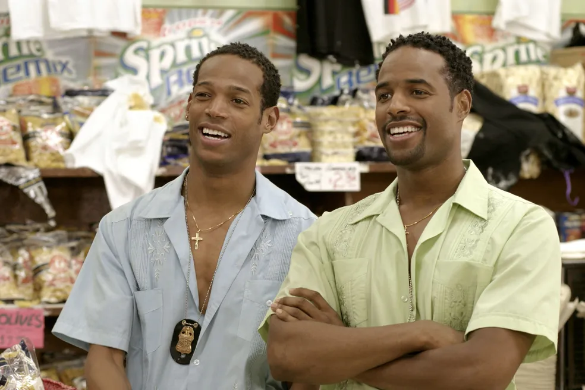
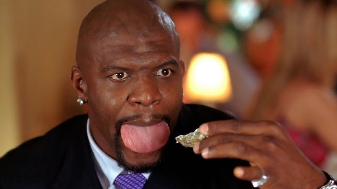
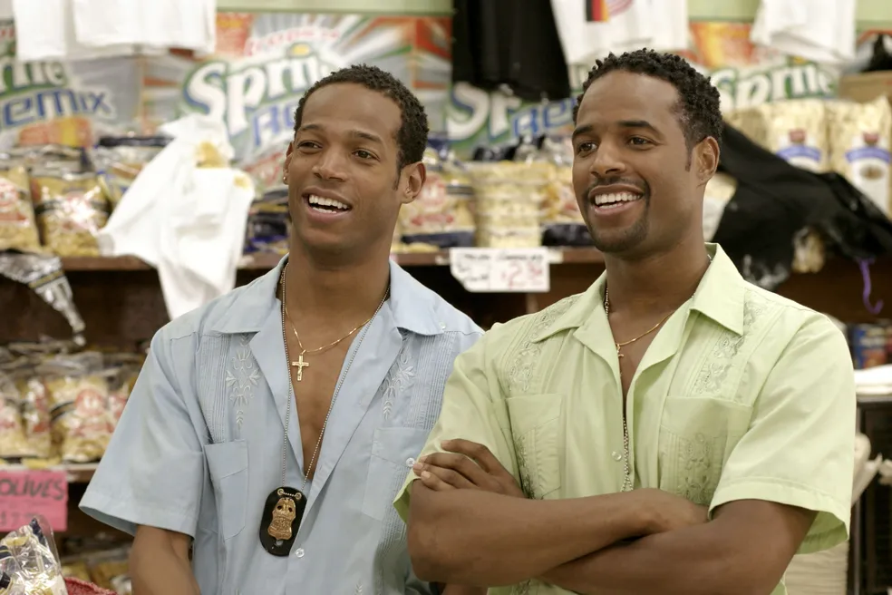
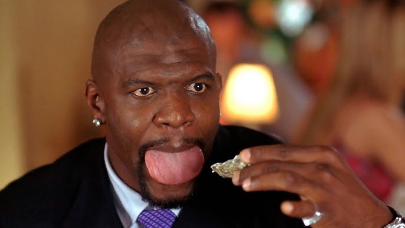

As Branquelas
Dois irmãos agentes do FBI, Marcus e Kevin Copeland, acidentalmente evitam que bandidos sejam presos em uma apreensão de drogas. Como castigo, eles são forçados a escoltar um par de socialites nos Hamptons. Quando as meninas descobrem o plano da agência, elas se recusam a ir. Sem opções, Marcus e Kevin, dois homens negros, decidem fingir que são as irmãs e se transformam em um par de loiras.
Trailer
Elenco
Marlon Wayans
Personagem: Marcus Copeland
Descrição: Ele é um dos protagonistas e, junto com seu parceiro Kevin Copeland (interpretado por Shawn Wayans), se envolve em várias situações cômicas enquanto tenta resolver o caso de sequestro.

Shawn Wayans
Personagem: Kevin Copeland
Descrição: é o irmão de Marcus Copeland, interpretado por Marlon Wayans. Kevin é um agente do FBI que, junto com Marcus, se disfarça como as irmãs ricas Brittany e Tiffany Wilson.
Terry Crews
Personagem: Latrell Spencer
Descrição: Ele é um jogador de futebol americano famoso e uma das figuras centrais da trama.
Curiosidades
- Os protagonistas de "As Branquelas" são mesmo irmãos na vida real! O diretor da produção, Keenen Ivory Wayans, também é irmão dos atores Marlon Wayans e Shawn Wayans. Tudo em família!
- Marlon Wayans, que interpretou Marcus, teria quebrado uma de suas costelas durante uma troca de roupas da personagem Tiffany.
- O longa teve um custo total de 37 milhões de dólares e arrecadou 113 milhões de dólares mundialmente.
Galeria
 


